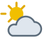

Dados
- Área:
- 505.990 km²
- População:
- 48,6 milhões
- Capital:
- Madri
- Idiomas:
- Espanhol, catalão, galego, basco
- Moeda:
- Euro (€)
- Fuso horário:
- UTC+1
- Código telefônico:
- +34
- Domínio de internet:
- .es
Clima

- Temperatura:
- 8 °C
- Condições:
- Parcialmente nublado
- Vento:
- 12 km/h
- Sensação térmica:
- N/A